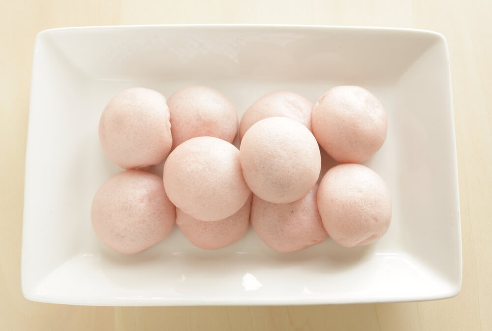

-
Doce Manju
Modo de Preparo O Manju é um dos bolinhos mais tradicionais do Japão, também feito à base de mochi. Ele é tradicionalmente recheado com anko e pode ser facilmente encontrado em mercados típicos japoneses. Além da versão tradicional, ele também pode ser servido assado, grelhado no espeto ou com creme de laranja. Venha conferir o passo a passo!
1 Lave o feijão e deixe um bom tempo de molho.
2 Em seguida, cozinhe-o na panela de pressão por aproximadamente 30 minutos, igual ao feijão comum.
3 Depois de cozido, bata todo o feijão no liquidificador.
4 Com um pano tire o líquido da massa
5 Em seguida, deve ser levada ao fogo com o açúcar e o sal.
6 Em poucos minutos está pronto o doce, que costuma ser enrolado em pequenas bolinhas.